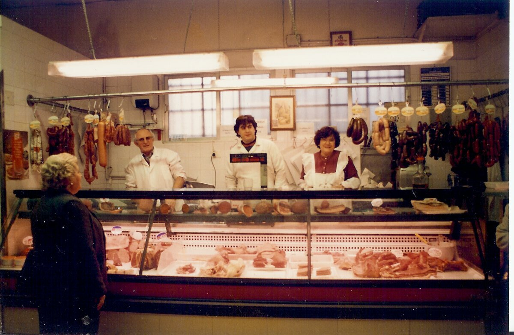
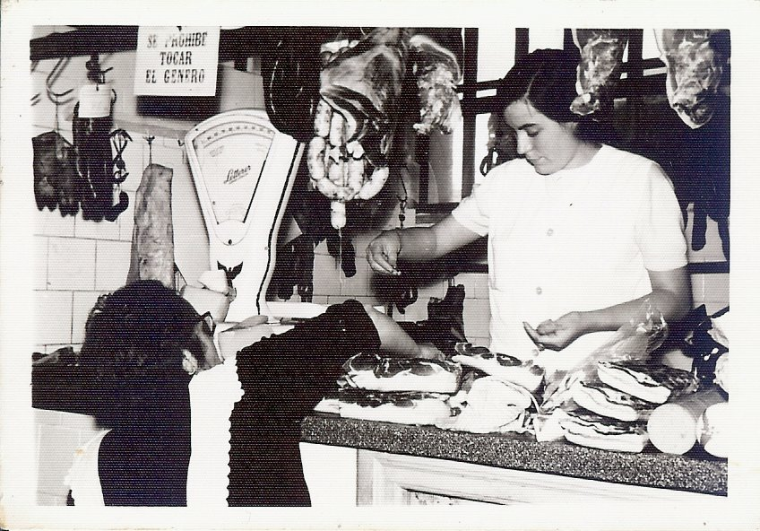
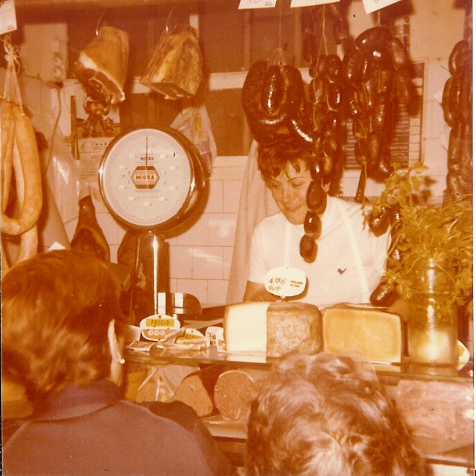
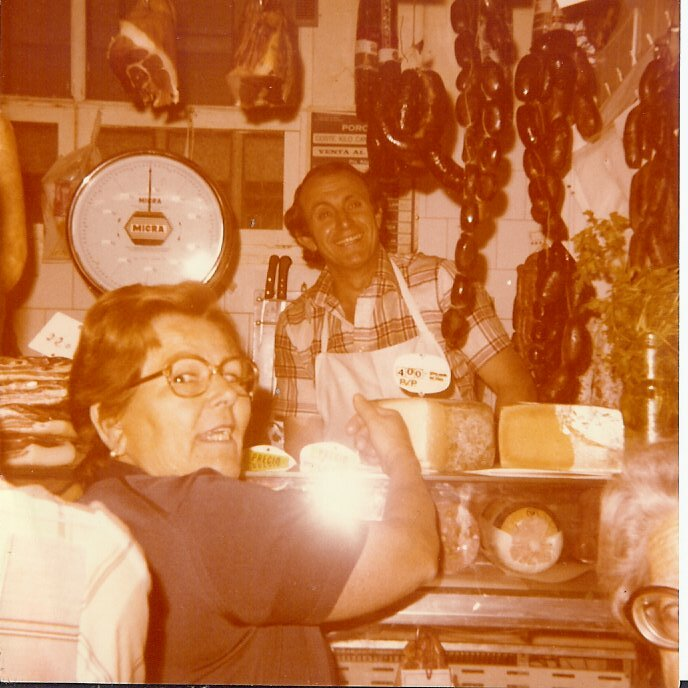

Recetas de casa
Diez papeles manuscritos. En tinta azul, la fórmula; en tinta roja y en valenciano, cómo se hacía. El óvalo marca los gramos de aditivos por kilo de masa, sal incluida.
Hojas del proveedor
Instrucciones de fabricación mecanografiadas que entregaba la casa de especias, una por cada mezcla.
"CEYLAMIX"
Etiquetas
Las pegatinas de los botes de especias. Cada una lleva la dosis máxima por kilo de masa y la composición.
La parada
Fotos del punto de venta. Proceden de «El mercat de Sant Antoni», de la misma autora.



